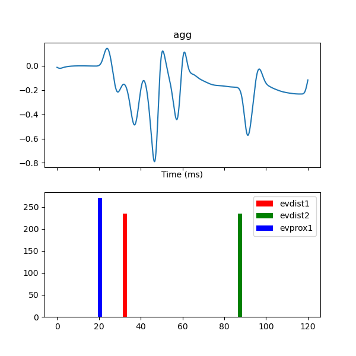
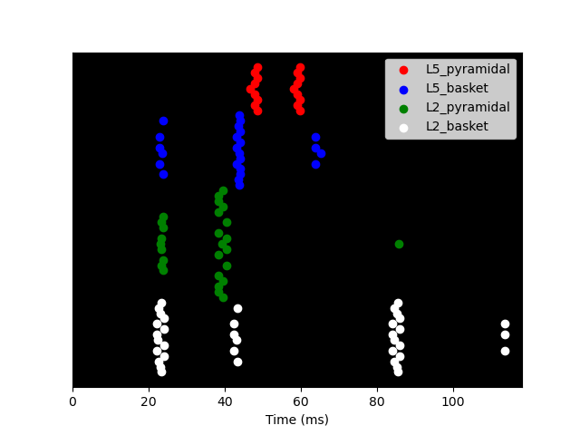

Note
Click here to download the full example code or run this example in your browser via Binder
Simulate somato data¶
This example demonstrates how to simulate the source time courses obtained during median nerve stimulation in the MNE somatosensory dataset.
# Authors: Mainak Jas <mainakjas@gmail.com>
# Ryan Thorpe <ryan_thorpe@brown.edu>
First, we will import the packages and define the paths
import os.path as op
import numpy as np
import matplotlib.pyplot as plt
import mne
from mne.datasets import somato
from mne.minimum_norm import apply_inverse, make_inverse_operator
data_path = somato.data_path()
subject = '01'
task = 'somato'
raw_fname = op.join(data_path, 'sub-{}'.format(subject), 'meg',
'sub-{}_task-{}_meg.fif'.format(subject, task))
fwd_fname = op.join(data_path, 'derivatives', 'sub-{}'.format(subject),
'sub-{}_task-{}-fwd.fif'.format(subject, task))
subjects_dir = op.join(data_path, 'derivatives', 'freesurfer', 'subjects')
Then, we get the raw data and estimage the source time course
raw = mne.io.read_raw_fif(raw_fname, preload=True)
raw.filter(1, 40)
events = mne.find_events(raw, stim_channel='STI 014')
event_id, tmin, tmax = 1, -.2, .15
baseline = None
epochs = mne.Epochs(raw, events, event_id, tmin, tmax, baseline=baseline,
reject=dict(grad=4000e-13, eog=350e-6), preload=True)
evoked = epochs.average()
fwd = mne.read_forward_solution(fwd_fname)
cov = mne.compute_covariance(epochs)
inv = make_inverse_operator(epochs.info, fwd, cov)
method = "MNE"
snr = 3.
lambda2 = 1. / snr ** 2
stc = apply_inverse(evoked, inv, lambda2, method=method, pick_ori="normal",
return_residual=False, verbose=True)
pick_vertex = np.argmax(np.linalg.norm(stc.data, axis=1))
plt.figure()
plt.plot(1e3 * stc.times, stc.data[pick_vertex, :].T * 1e9, 'ro-')
plt.xlabel('time (ms)')
plt.ylabel('%s value (nAM)' % method)
plt.xlim((0, 150))
plt.axhline(0)
plt.show()
Out:
Opening raw data file /Users/mainak/mne_data/MNE-somato-data/sub-01/meg/sub-01_task-somato_meg.fif...
Range : 237600 ... 506999 = 791.189 ... 1688.266 secs
Ready.
Current compensation grade : 0
Reading 0 ... 269399 = 0.000 ... 897.077 secs...
Filtering raw data in 1 contiguous segment
Setting up band-pass filter from 1 - 40 Hz
FIR filter parameters
---------------------
Designing a one-pass, zero-phase, non-causal bandpass filter:
- Windowed time-domain design (firwin) method
- Hamming window with 0.0194 passband ripple and 53 dB stopband attenuation
- Lower passband edge: 1.00
- Lower transition bandwidth: 1.00 Hz (-6 dB cutoff frequency: 0.50 Hz)
- Upper passband edge: 40.00 Hz
- Upper transition bandwidth: 10.00 Hz (-6 dB cutoff frequency: 45.00 Hz)
- Filter length: 991 samples (3.300 sec)
111 events found
Event IDs: [1]
111 matching events found
No baseline correction applied
Not setting metadata
0 projection items activated
Loading data for 111 events and 106 original time points ...
0 bad epochs dropped
Reading forward solution from /Users/mainak/mne_data/MNE-somato-data/derivatives/sub-01/sub-01_task-somato-fwd.fif...
Reading a source space...
[done]
Reading a source space...
[done]
2 source spaces read
Desired named matrix (kind = 3523) not available
Read MEG forward solution (8155 sources, 306 channels, free orientations)
Source spaces transformed to the forward solution coordinate frame
Computing data rank from raw with rank=None
Using tolerance 1.4e-08 (2.2e-16 eps * 306 dim * 2.1e+05 max singular value)
Estimated rank (mag + grad): 306
MEG: rank 306 computed from 306 data channels with 0 projectors
/Users/mainak/Documents/github_repos/hnn-core/examples/plot_simulate_somato.py:47: RuntimeWarning: Something went wrong in the data-driven estimation of the data rank as it exceeds the theoretical rank from the info (306 > 64). Consider setting rank to "auto" or setting it explicitly as an integer.
cov = mne.compute_covariance(epochs)
Reducing data rank from 306 -> 306
Estimating covariance using EMPIRICAL
Done.
Number of samples used : 11766
[done]
Converting forward solution to surface orientation
No patch info available. The standard source space normals will be employed in the rotation to the local surface coordinates....
Converting to surface-based source orientations...
[done]
Computing inverse operator with 306 channels.
306 out of 306 channels remain after picking
Selected 306 channels
Creating the depth weighting matrix...
204 planar channels
limit = 7615/8155 = 10.004172
scale = 5.17919e-08 exp = 0.8
Applying loose dipole orientations. Loose value of 0.2.
Whitening the forward solution.
Computing data rank from covariance with rank=None
Using tolerance 2e-12 (2.2e-16 eps * 306 dim * 29 max singular value)
Estimated rank (mag + grad): 64
MEG: rank 64 computed from 306 data channels with 0 projectors
Setting small MEG eigenvalues to zero (without PCA)
Creating the source covariance matrix
Adjusting source covariance matrix.
Computing SVD of whitened and weighted lead field matrix.
largest singular value = 2.41945
scaling factor to adjust the trace = 3.87864e+18
Preparing the inverse operator for use...
Scaled noise and source covariance from nave = 1 to nave = 111
Created the regularized inverter
The projection vectors do not apply to these channels.
Created the whitener using a noise covariance matrix with rank 64 (242 small eigenvalues omitted)
Applying inverse operator to "1"...
Picked 306 channels from the data
Computing inverse...
Eigenleads need to be weighted ...
Computing residual...
Explained 86.1% variance
[done]
/Users/mainak/Documents/github_repos/hnn-core/examples/plot_simulate_somato.py:64: UserWarning: Matplotlib is currently using agg, which is a non-GUI backend, so cannot show the figure.
plt.show()
Now, let us try to simulate the same with MNE-neuron
import os.path as op
import hnn_core
from hnn_core import simulate_dipole, read_params, Network
hnn_core_root = op.join(op.dirname(hnn_core.__file__), '..')
params_fname = op.join(hnn_core_root, 'param', 'N20.json')
params = read_params(params_fname)
net = Network(params)
dpl = simulate_dipole(net)
import matplotlib.pyplot as plt
fig, axes = plt.subplots(2, 1, sharex=True, figsize=(6, 6))
dpl[0].plot(ax=axes[0])
net.plot_input(ax=axes[1])
net.plot_spikes()
- 
- 
Out:
Loading custom mechanism files from /Users/mainak/Documents/github_repos/hnn-core/hnn_core/../mod/x86_64/.libs/libnrnmech.so
Building the NEURON model
[Done]
running on 1 cores
Simulation time: 0.03 ms...
Simulation time: 10.0 ms...
Simulation time: 20.0 ms...
Simulation time: 30.0 ms...
Simulation time: 40.0 ms...
Simulation time: 50.0 ms...
Simulation time: 60.0 ms...
Simulation time: 70.0 ms...
Simulation time: 80.0 ms...
Simulation time: 90.0 ms...
Simulation time: 100.0 ms...
Simulation time: 110.0 ms...
/Users/mainak/Documents/github_repos/hnn-core/hnn_core/dipole.py:209: UserWarning: Matplotlib is currently using agg, which is a non-GUI backend, so cannot show the figure.
plt.show()
/Users/mainak/Documents/github_repos/hnn-core/hnn_core/network.py:480: UserWarning: Matplotlib is currently using agg, which is a non-GUI backend, so cannot show the figure.
plt.show()
/Users/mainak/Documents/github_repos/hnn-core/hnn_core/network.py:519: UserWarning: Matplotlib is currently using agg, which is a non-GUI backend, so cannot show the figure.
plt.show()
Total running time of the script: ( 1 minutes 23.746 seconds)